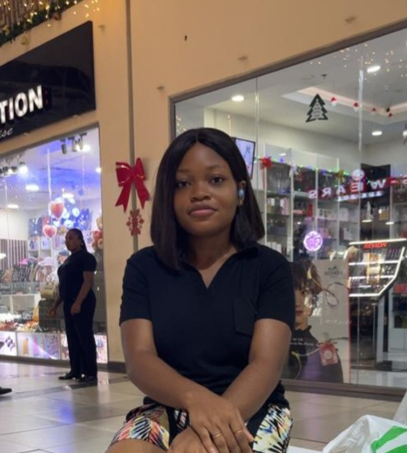
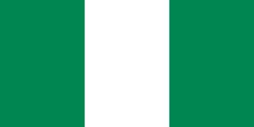

Esther Enagu-Okpa
About Me

My name is Esther Osowojene from Nigeria. I'm currently pursuing a degree with BYU-Pathway. I am the last child of four children. My favourite things to do are read fiction and listen to music.
Calabar, Nigeria

Nigeria is a multinational country in West Africa, known for its diverse culture and rich history. Over 500 indigenous languages are spoken across more than 250 distinct ethnic groups, with English serving as the official language. Nigeria houses the largest river delta in Africa (the Niger Delta), over 1,000 species of butterflies, and the critically endangered Cross River gorilla. Lagos, its largest city, hosts the Third Mainland Bridge, which spans 11.8 km and connects the island to the mainland. It is the second-longest bridge on the continent.